Design review · second UX pass
A clear path through the product.
The second pass begins with a reader's purpose, one task at a time, and source material that reads like a document.
Read the explicit UX contract. The current HTML is the design reference. The first image concepts are retained as historical artifacts below.
Explore the current screens
Choose a reading path →Follow a use case →Do the current task →Connect an application →Find a requirement →
Captured browser views
Each title opens the captured state. Each image opens its full-size screenshot. Open the verified print example (PDF).

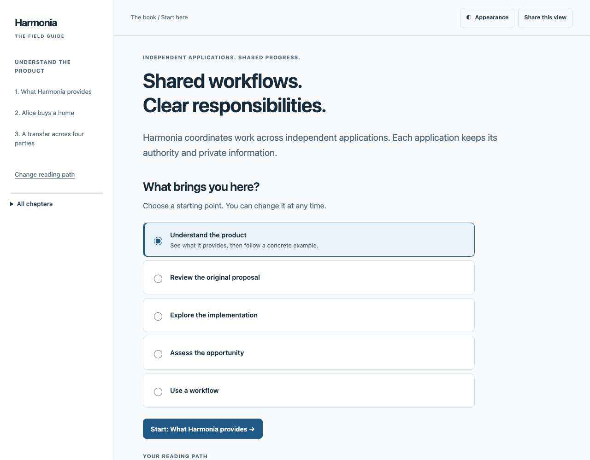

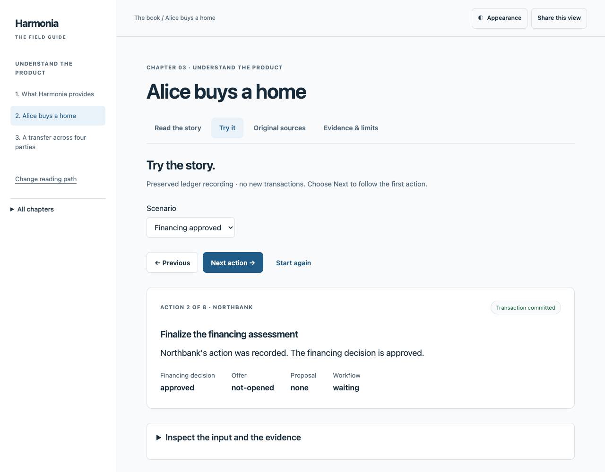

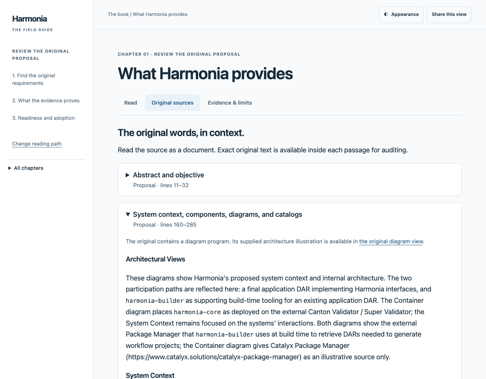

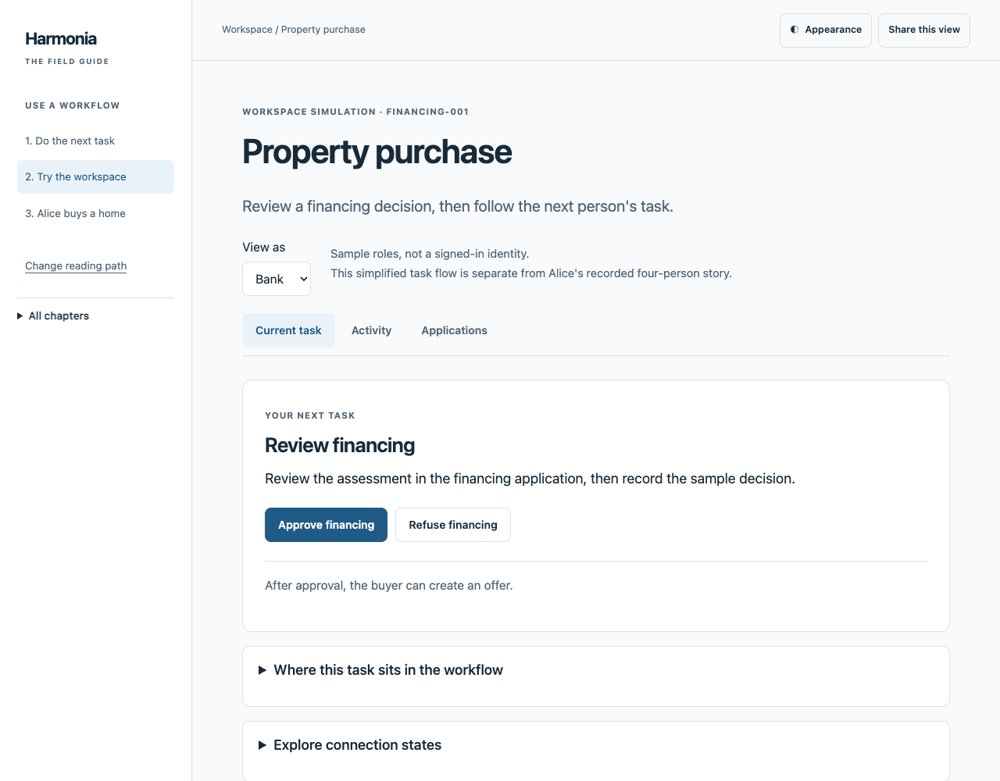

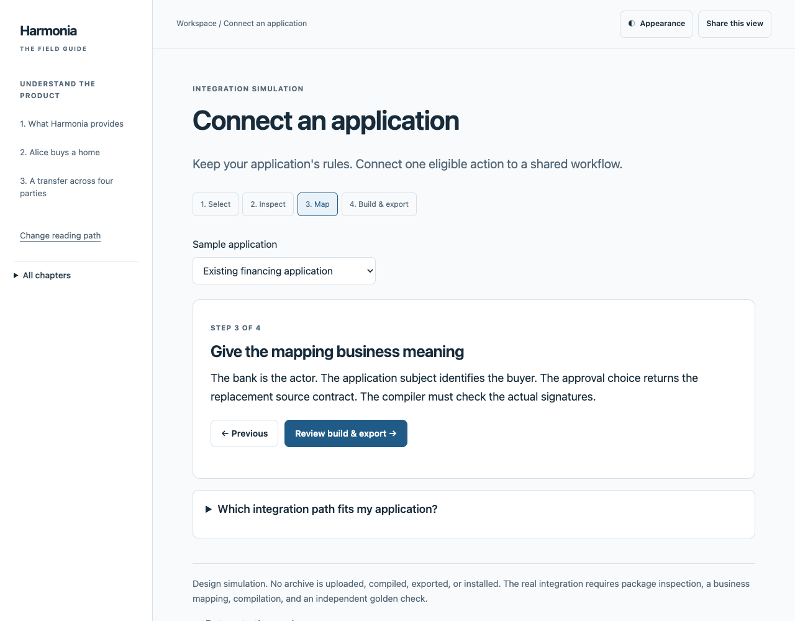

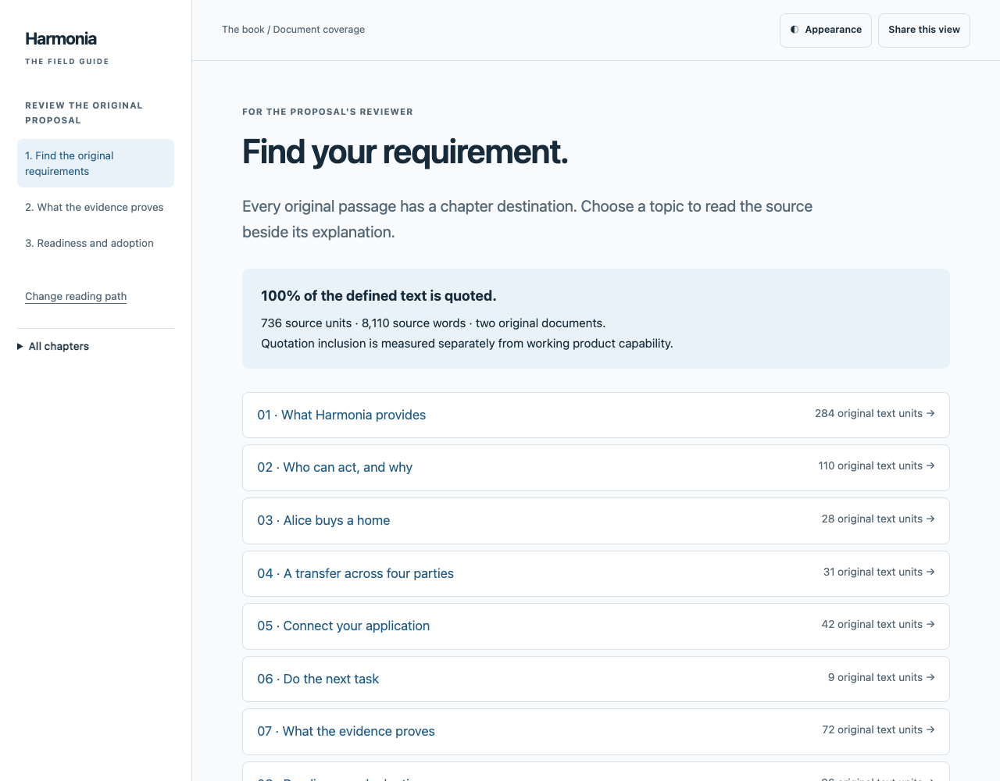

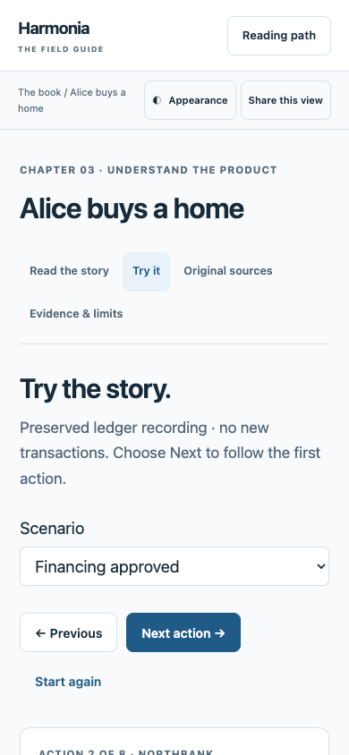

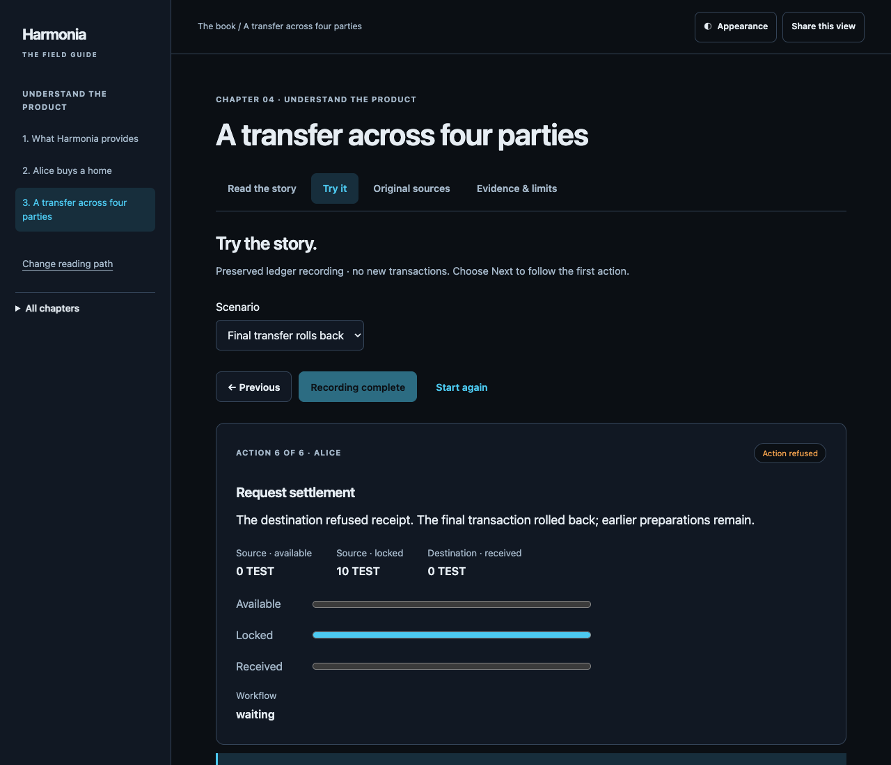

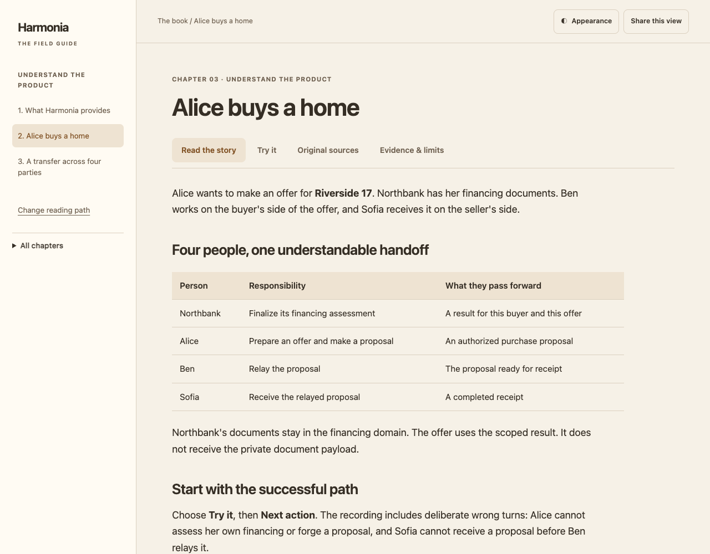
First-pass concepts · preserved design history
These images belong to v0.2.0-design.1. Their olive palette and layout are superseded by this UX pass. They are not screenshots of the current interface.


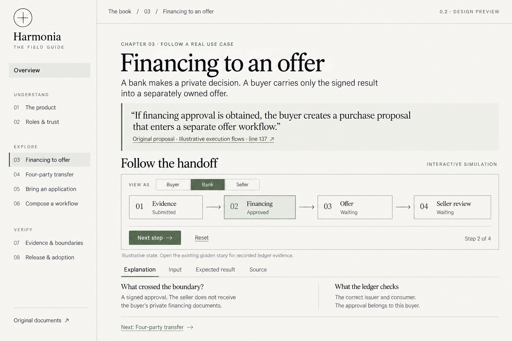

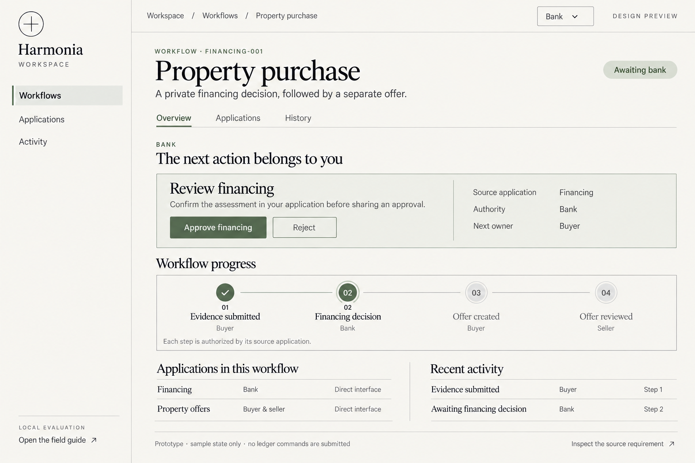

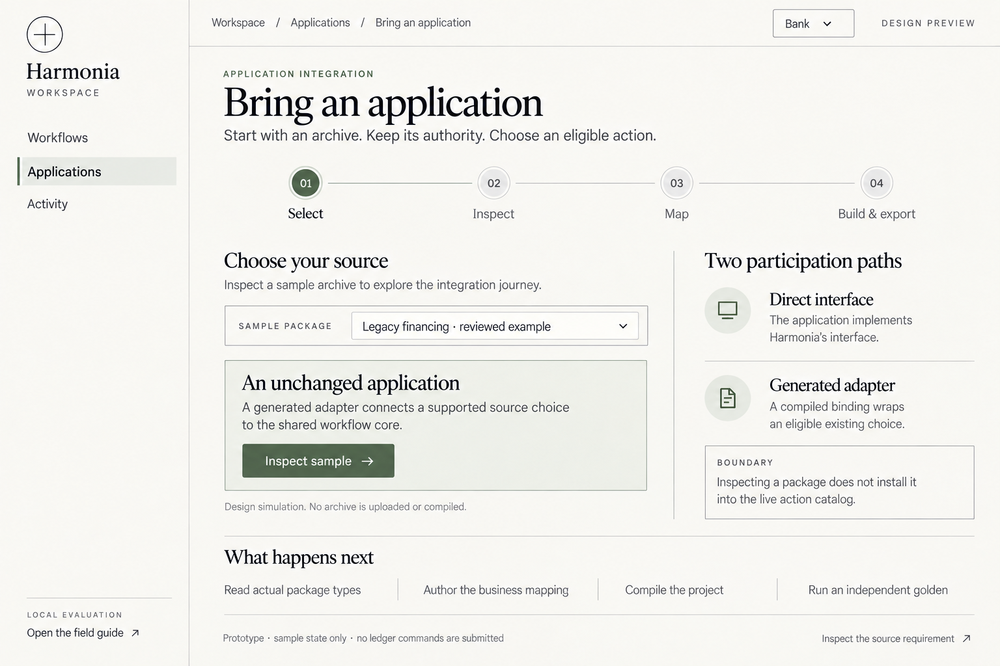

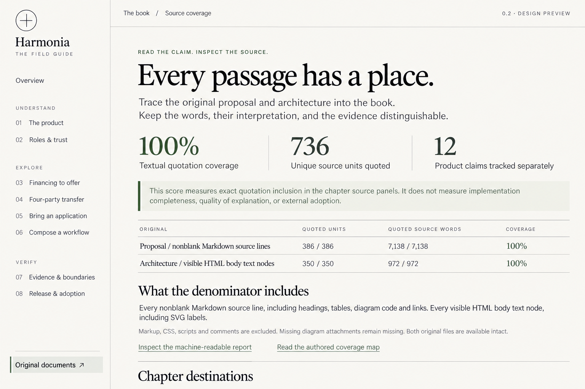